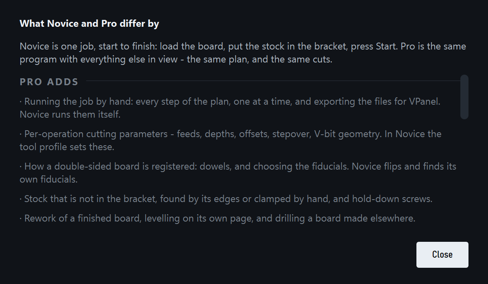

Install & connect
Install SRM-CAM, plug in the mill and the laser, and learn the window. On Windows the mill also needs Roland's driver, once per PC. Then go on to From KiCad and Make a board.
Install SRM-CAM
| Platform | Get it | Notes |
|---|---|---|
| Windows | SRM-CAM-Setup.exe | No Python needed. Start-menu entry, Documents\SRM-CAM\ workspace. Install a new version over the old one; setups and profiles survive. The mill also needs Roland's driver. |
| Linux | SRM-CAM-…-x86_64.AppImage from the latest release | chmod +x, run. No install, no root. No driver for the mill: once, . |
| macOS (Apple silicon) | SRM-CAM-macOS-arm64.dmg | For the mill: once, . |
| From source | pip install -e ".[gui]" then python -m gerber2rml | After a git pull, python -m gerber2rml.doctor installs anything new. |
Then, in SRM-CAM, (it also offers this a moment after it first opens). The buttons are on From KiCad.
Connect the machines
Three USB cables, on Windows, Linux and macOS alike. The mill has two: the black one is the Arduino fitted inside it (position, jog, probing, STOP), the white one is the mill's own (SRM-CAM sends the jobs over it). The run uses both. The laser has one.
- The mill's link: press Connect on the machine bar at the bottom of the window (or , Ctrl+L). More on Machine control.
- The laser (xTool F1 Ultra) shows up as a USB network adapter. SRM-CAM talks to it directly: no driver, and no xTool Creative Space. The laser page says when it has an answer. More on The laser page.
- No PC at the mill? Install SRM-CAM on your own laptop (Windows, Linux or macOS) and plug the cables in yourself. On Windows, Roland's driver too.
Windows only: Roland's driver
On Windows, SRM-CAM cannot talk to the SRM-20 until the Roland driver is installed: Windows needs it to see the mill at all. When the driver is installed, the mill shows up as a printer called Roland SRM-20, and SRM-CAM sends the job to that printer. Without it, Start stops with “The Roland SRM-20 printer is not installed on this PC”.
On Windows the driver is the only thing you must install besides SRM-CAM. Download it from Roland before you plug the mill into the PC. Roland's VPanel is optional: the run in SRM-CAM sends the job itself, in Novice and in Pro, and does not use it. See when you want VPanel.
Download
It is on Roland DG's official download page for the SRM-20 (the monoFab SRM-20). Open it on the Software tab:
downloadcenter.rolanddg.com/SRM-20
| Download | Pick this one | Notes |
|---|---|---|
| monoFab Driver | Windows 10 64-bit, Ver. 2.12 (2024-10-17). On a 32-bit Windows 10, the 32-bit one. | This is the SRM-20's driver; Roland calls it the monoFab Driver. Ver. 2.11 and later support Windows 11 and 10 (Roland's guide uses the Windows 10 folder for both). Windows 8 and 7 are no longer supported. Ver. 2.11 also fixed jobs not being output after a 2024 Windows update, so do not use an older driver. |
| VPanel for SRM-20 (optional) | Installer, Ver. 1.10 (2015-07-01) | Not needed for the automatic run. A 32-bit program, which runs on 64-bit Windows 10 and 11. The Updater beside it is for upgrading an older VPanel. |
Roland asks you to accept its software licence before the download, so there is no file link to paste here: click through on Roland's page. You get a zip file. Roland's own step-by-step guide is the Roland DG startup page for the SRM-20, and the steps below follow it.
Install the driver
The order matters. Do not connect the mill's USB cable to the PC until step 8. Plugging it in early can make the driver impossible to install.
- Log on as an administratorIf an older driver for the SRM-20 is installed, uninstall it first (Roland says to do this before installing 2.12): run
SETUP64.exefrom the old driver's folder, click Uninstall, pick the machine, click Start and restart the PC. - Unzip the driverUnzip the file you downloaded and open the folder it makes.
- Open the folder for your Windows
WIN10X64for 64-bit Windows 11 and 10,WIN10X86for 32-bit Windows 10. The wrong folder cannot install the driver. - Run the setupDouble-click
SETUP64.exe(64-bit) orSETUP.exe(32-bit). If Windows asks User Account Control, click Yes. - Pick the modelClick Install, choose SRM-20 as the Model and USB as the port, and click Start.
- Follow the installerAccept the licence, click Install (once in the installer, once in the Windows security window), then Finish.
- Power the millPlug in the mill's power cable and AC adapter, close the front cover and press the power button. Wait until the green light stops flashing and stays lit: that is the start-up finished.
- Now connect the USB cableUse the USB cable that came with the mill (the white one), straight into the PC: no USB hub and no extension cable. Windows finishes installing the driver. Do not unplug it until that is done.
- Check itOpen . The SRM-20 must be listed under Printers. If it is not, or it shows as Unspecified, see Troubleshooting.
VPanel (optional)
SRM-CAM does not need VPanel to cut a board: with the driver installed, the automatic run sends the job to the mill itself. Install VPanel only if you want one of these:
- Pro, by hand: you export the files and play them from VPanel, as in Milling a board by hand.
- The mill's own settings: the command set must be NC Code and the G54 X/Y origin must be machine 0, 0. They are stored in the mill, so a mill that is already set up needs nothing. If a run stops and names one of them, VPanel is where you change it on Windows.
- Unzip and runUnzip the VPanel file, double-click
setup.exein the folder, and follow the installer. - Start it in the right orderClose the mill's front cover, switch the mill on and wait for the light to stay lit, then open . If VPanel was opened with the mill off, switch the mill on and click Retry.
- Set it upIn VPanel, must be NC Code and the G54 X/Y origin must be machine 0, 0. The run stops before it cuts if either is wrong; see Troubleshooting.
No driver and no VPanel. On Linux, plug in both USB cables, then use once; it asks for your password. On macOS, once. On both, SRM-CAM sets the mill's Command Set to NC Code itself before a run, and has the rest.
Staying current
The app checks GitHub for a newer release a moment after it opens and says so once, with the download link. asks any time. It never installs anything by itself: you download the new file and install it the same way as the first time.
The first interface is still shipped: SRM-CAM --original from an install, python -m gerber2rml.gui from source. Same engine, same files.
Workspace folders
| Folder | Contents |
|---|---|
Documents\SRM-CAM\sessions | Setups (.srmcam) and height maps (.csv) |
Documents\SRM-CAM\exports | Exported .nc / .rml files and the run plan |
Documents\SRM-CAM\photos | Board photos for the overlay |
Documents\SRM-CAM\runs | One folder per run on the mill: its log, height map and the files sent. See What the run made. |
Documents\SRM-CAM\laser.log | What the laser page did. |
Documents\SRM-CAM\gui2.log | Where a start-up problem ends up when there is no console. Read it first if the window never opens. |
The window
A header, the rail on the left, the bed in the middle, the page of the selected row on the right, and the machine bar at the bottom.
 1
2
3
4
5
6
1
2
3
4
5
6- The header: the method chip (how the board is made; click to choose another), then CNC / Laser: the mill's page or the laser's (Ctrl+1 / Ctrl+2).
- The rail: the board's steps, top to bottom. Click any row at any time; nothing is locked. A finding that matters stays on the banner above it.
- The bed of the mill, in machine coordinates: the sheet, the board, the toolpaths of the selected step. Above it: Turn left, Turn right, Mirror, Centre, Undo, Photo ▾ and As cut / X-ray. Fit (Ctrl+0) and Travel moves are in the View menu.
- The page of the selected row: Your board here, the checks, the run page.
- The machine bar: Connect and the port, the position, the jog pad, and STOP. Esc stops the machine from anywhere, a dialog open or not.
- The tier chip: Novice or Pro. Click to switch.
On the bed, drag the board, or tap the arrow keys to nudge it 0.1 mm (Shift 1 mm, Ctrl 0.01 mm). Scroll to zoom, right-drag to pan. As cut is the frame the machine works in; X-ray is for checking that the two faces of a two-sided board line up.
The rail
Which rows the rail has depends on the board's method, the tier, and the layers its folder has. A row that runs on a machine carries a MILL or LASER tag; a laser row opens the laser page beside the rail. At the foot: Save the files… in Novice, Export for VPanel… in Pro.
Novice & Pro
Two tiers. Click the tier chip at the top right of the window to switch, or use / . Novice is the default: the rail has only what the run needs (Make a board). Pro runs the same run and has everything else too. It is the same program and the same plan, and exported files are identical in both.
| Novice | Pro | |
|---|---|---|
| Rail | Your board, Check it, the run, and the laser's rows | The same, plus every step one at a time |
| How it cuts | The run, sent directly to the mill | The same run, or files you play from VPanel |
| The stock | Held in the corner bracket | The bracket, or anywhere: the probe finds its corner. Or held by hand (Holding the copper) |
| Levelling | Part of the run | Also its own page, and by hand |
| Double-sided | One tick | Fiducials or dowels, every setting |
| Cutting parameters | From the tool profile | Per operation, and your own profiles |
| Also only in Pro | — | Export for VPanel, Fix spots, several boards on a sheet, drilling a board made elsewhere, output format, machine test, simulated mill |
| Both | The pre-flight checks, the jog pad and arrow keys, Click to jog, and STOP | |
lists it in the app. A lab that wants the profile fixed sets SRM_CAM_MODE to novice or pro in the environment or the shortcut.

By hand in VPanel (Pro)? has the lessons for that: see Milling a board by hand.
Setups
(Ctrl+S) writes one .srmcam file with everything: the boards and where they sit, the tool, the copper sheet, the screws, the height maps of both faces, the measured flip. brings it back. A setup written by the first interface loads too.
A probed height map is minutes of machine time. Save the setup right after probing; the map is in it.
Reach out to Mads Rudolph, or to the TAs of the course, if you need guidance with the machines.